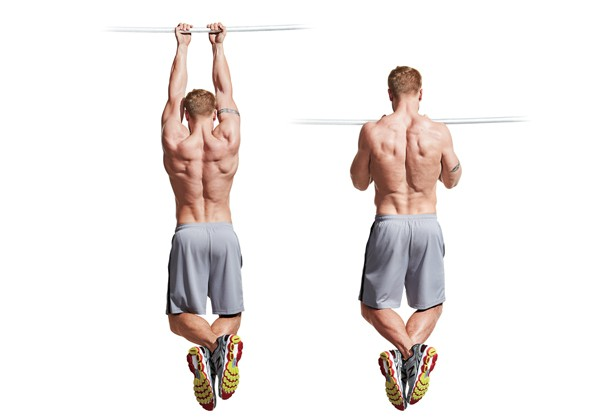

Kỹ thuật hít xà đơn đúng cách dành cho người tập luyện xà đơn:
+Đặt hai tay lên xà đơn, sao cho khoảng cách hai tay rộng hơn chiều rộng của vai: Với cách thực hiện như thế này, trọng lượng cơ thể sẽ giảm bớt áp lực cho đôi tay, phù hợp với người mới tập luyện.
+Hai tay nắm chắc trên xà đơn, có 2 cách nắm tay gồm: nắm tay vào xà đơn sao cho lòng bàn tay hướng ra ngoài và nắm tay vào xà đơn sao cho lòng bàn tay quay về phía bên trong cơ thể. Người mới tập thường được khuyến nghị nên sử dụng cách nắm xà số 2 – lòng bàn quay quay về bên trong cơ thể.
+Đối với người mới tập, khi nâng người bạn phải cố gắng giữ thẳng sống lưng, ngược hơi ướn về phía trước. Cách tập này giúp người mới dễ dàng tập luyện và giảm bớt các chấn thương cho phần lưng.
+Khi hít xà lên, trong khi bạn dùng lực cánh tay và vai để kéo trọng lượng cơ thể vượt qua khỏi xà bạn thực hiện kết hợp với hơi thở. Hãy thở ra thật chậm rãi trong khi nâng người lên và hít vào thật sâu khi hạ người xuống. Một cách nhỏ để giảm trọng lượng cơ thể khi lên xà đó là hãy khép hai cánh tay sát vào với cơ thể. Ngoài ra, bạn cần phải ghi nhớ khi hít xà cơ thể gần như cố định, chỉ có cánh tay, cẳng tay di chuyển mới là cách tập luyện hiệu quả nhất.
+Lặp lại các động tác hít xà lên và hạ người xuống.
Một số kinh nghiệm dành cho người mới tập luyện xà đơn
+Nên khởi động kỹ trước khi tập luyện: Giống như bất cứ 1 môn thể thao nào, với xà đơn bạn cần khởi động thật kỹ để đảm bảo cơ thể chuyển từ trạng thái nghỉ ngơi sang trạng thái tập luyện, giảm bớt các tổn thương nếu có trong quá trình tập luyện.
+Hơi thở khi tập luyện: Các bạn cần lưu ý hơi thở cần phải có sự nhịp nhàng trong khi bạn tập luyện hít xà lên hoặc hạ người xuống. Hơi thở phải đảm bảo sự kết hợp nhuần nhuyễn với cơ cánh tay
+Nên tìm những xà đơn có chiều cao thấp để tập luyện trước: Xà dành cho những người mới làm quen chỉ nên có chiều cao đến ngang ngực người mới tập. Với loại xà này, bạn không thể áp dụng bài tập hít xà lên/xuống như những người chuyên nghiệp được mà nên tập luyện với các động tác nhằm tăng lực cho cơ cánh tay.